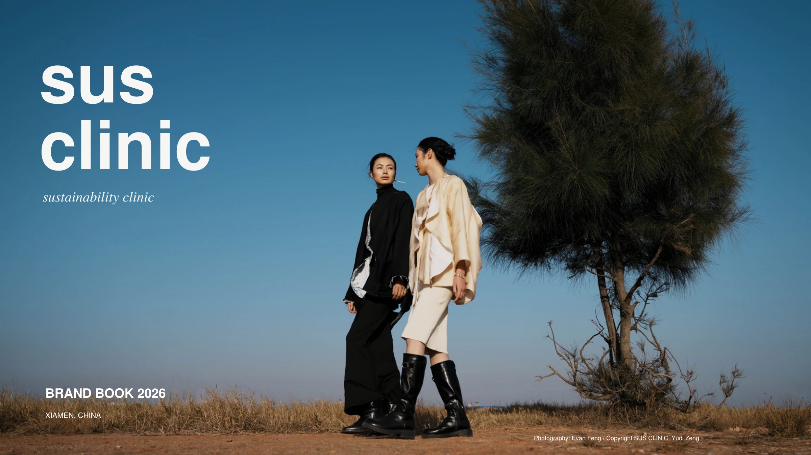
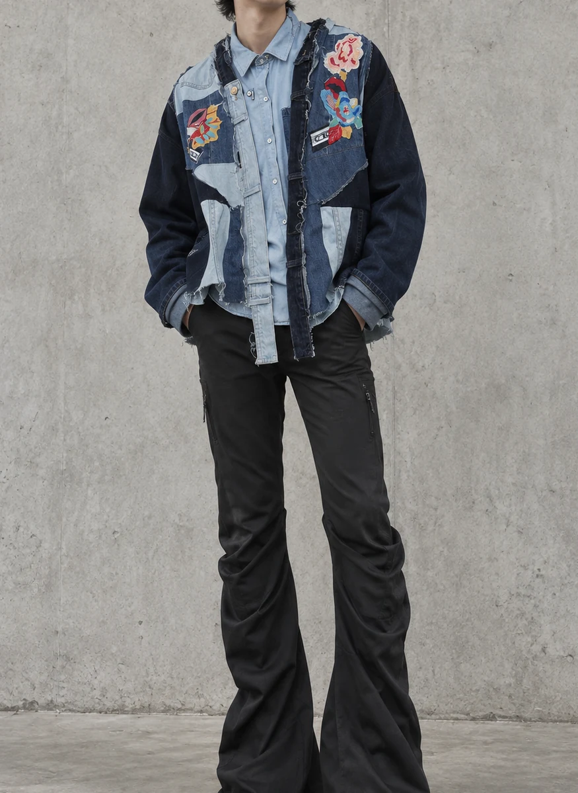
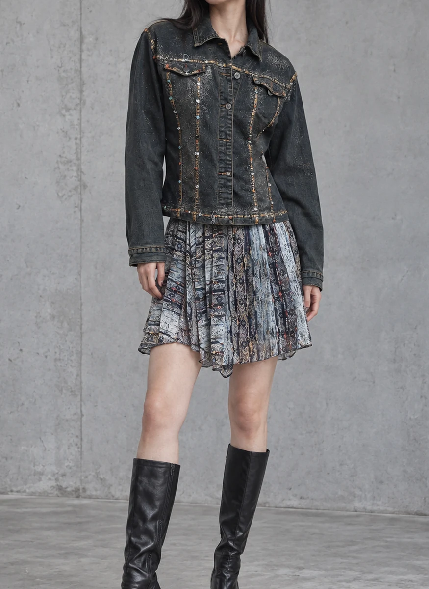

02 / INTERDEPENDENCE · OPERATIONAL SYSTEM
From Space to System
How do product, place, people, and channels come together in a working independent venture?
As the sole operator, with no external funding, I transformed a former soil-testing lab in a residential development into SUS CLINIC, a fashion venture built around Remake with a complementary vintage retail line. I adapted the space, developed the offer, and connected sourcing, display, customer routes, and operations into a functioning commercial system.
This project follows how I built and tested that system: coordinating a difficult renovation, making the space operational, finding relationships that fit the work, and adapting the customer-acquisition strategy when Xiaohongshu was banned. The experience became a practical exercise in mapping market fit, operating work, and the cost of continuing or expanding.
My contribution: Spatial adaptation, product and brand strategy, material sourcing, partnership coordination, staff recruitment, and independent operation.Xiamen, China · Agreement signed 26 February 2024; renovation planned to finish 30 March and completed December 2024 · Opened 1 March 2025



PRACTICE ARTIFACT / VISUAL IDENTITY
SUS CLINIC — Brand Book 2026
The brand book records the venture’s visual identity and public-facing language.
Open brand book ↗BRAND STRATEGY / MARKET RESEARCH
Translating the offer for a wider fashion audience
I researched buyer shops across the Asia-Pacific region, visited Redress’s physical shop in Hong Kong, and explored potential partnerships with local shops, Shanghai-based buyers, and large Instagram accounts focused on Remake. These encounters helped me understand how different audiences recognized and valued the offer.
Remake remained the core product, but it reached a more specialized audience and was harder to convert into purchases; selling it often meant explaining circularity and the making process. Vintage was a more familiar entry point for customers already interested in fashion and nostalgia, and its audience overlapped with Remake. To reduce explanation friction, I presented the shop publicly as a vintage store while keeping Remake at the core. I led communication with design, material, and feeling, with circularity embedded in the product’s value. I used vintage customers’ willingness to pay as one reference when pricing Remake.


PRACTICE CONTEXT
Interviewed by Xiamen International Fashion Week, 2026
The interview documents the operational context behind this work.
Watch full interview ↗